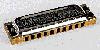

Это - часто задаваемые вопросы (FAQ) списка HARP-L, почтового списка для любителей гармоники. Вся информация в FAQ отобрана из писем авторов HARP-L. FAQ созданы Bart Boer. Harvey Andruss принадлежит окончательная редакция FAQ. Все ошибки, в FAQ конечно наши (и мои, конечно DK). Однако, мы не не несем ответственности за вред, причиненный инструментам или людям, непосредственно или косвенно вызванный информацией, приведенной в этом списке. Очень рекомендую перед ознакомлением с FAQ просмотреть следующий раздел: Несколько слов о терминологии в русской версии.